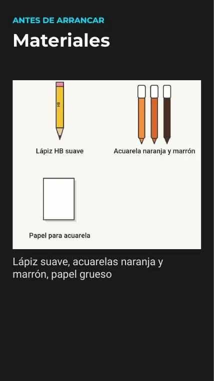
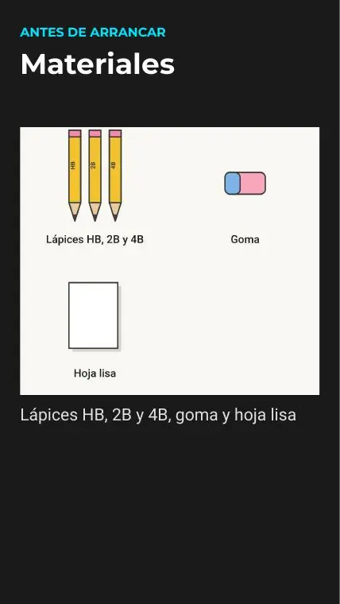

Blog › Cómo elegir papel para dibujo, acuarela y moldes
Post semanal #4 · papel
Cómo elegir papel para dibujo, acuarela y moldes
Qué es el gramaje (g/m²), qué papel conviene para lápiz, marcador, acuarela y moldes de papel, y cómo saber si tu impresora lo acepta.
7 diapositivas · 27/10/2026

Lápiz · 1 de 4
Hoja lisa común
Para los tutoriales con lápiz alcanza con una hoja A4 lisa «la que tengas», como dice la diapositiva de materiales del gato. Bocetá suave para no marcar el papel.

@Arteexperimentalv5x


Acuarela · 3 de 4
Papel grueso de acuarela
El zorro usa papel grueso. En las tiendas, el papel de acuarela suele venir en 190, 300 o 640 g/m²; el de 300 g/m² (equivale a 140 lb en el sistema estadounidense) es el estándar más común.

- Grano fino (prensado en frío): textura media, la más usada para empezar.
- Satinado (prensado en caliente): liso, ideal para detalles.
- Grano grueso: mucha textura, para manchas sueltas.
- Algodón vs. celulosa: el de algodón absorbe más parejo; el de celulosa es más barato y sirve para practicar.
Con papel fino, la acuarela ondula la hoja: pegá los bordes con cinta de papel sobre una tabla antes de pintar.
@Arteexperimentalv5x
Moldes · 4 de 4
Cartulina, si tu impresora la acepta
Los moldes salen con A4 común, pero el de Bulón recomienda cartulina de 120 a 180 g/m² para que la figura quede firme. Imprimí siempre al 100 %.

¿Tu impresora lo acepta? Buscá el gramaje máximo en el manual o en la ficha del fabricante (aparece como «peso del papel» o «gramaje admitido»). Si no figura, probá con una sola hoja y usá la bandeja trasera o manual si la tiene. Alternativa: imprimí en hoja común y pegala sobre una cartulina antes de recortar.
@Arteexperimentalv5x
Galería
Diapositivas de materiales de los tutoriales




Más en cómo imprimir y armar los moldes y en dibujar paso a paso.
@Arteexperimentalv5x
Publicado: 27/10/2026 · papel, materiales, acuarela, moldes